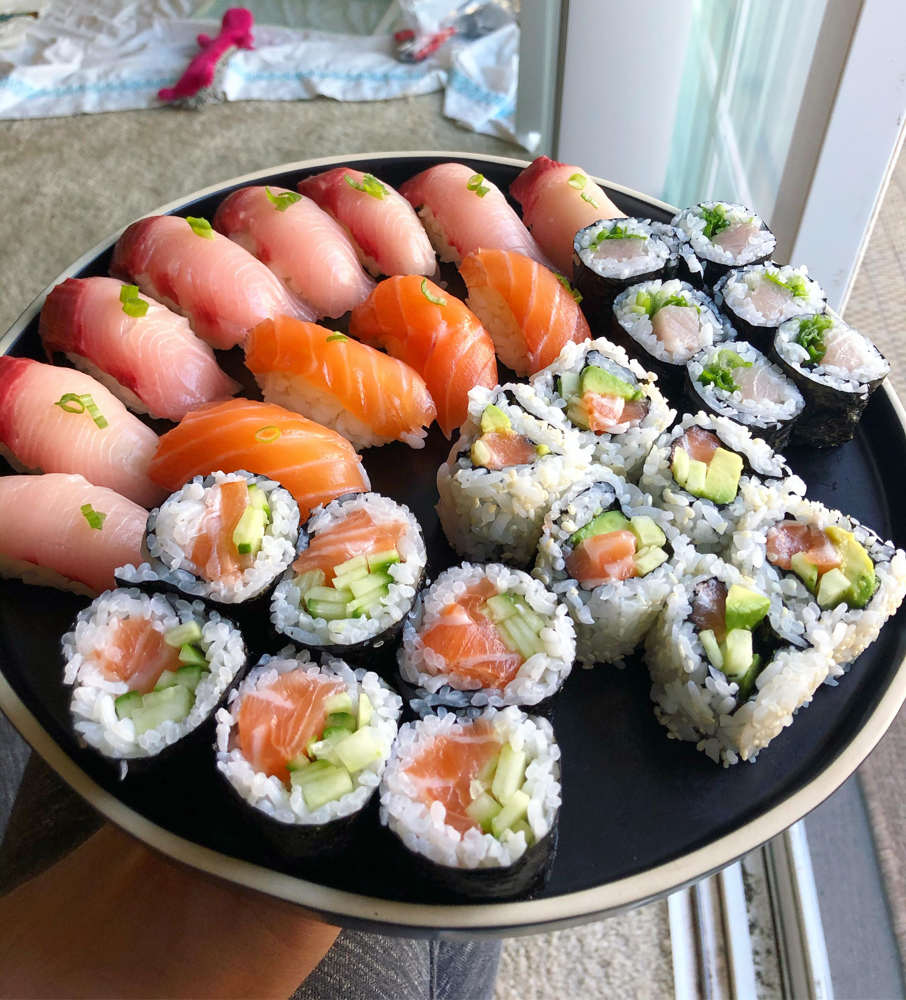

Sushi

Description
Sushi is a Japanese dish of prepared vinegared rice, usually with some sugar and salt, accompanied by a variety
of ingredients, such as seafood, often raw, and vegetables. Styles of sushi and its presentation vary widely,
but the one key ingredient is "sushi rice", also referred to as shari, or sumeshi
The inventor of modern sushi is believed to be Hanaya Yohei, who invented nigiri-zushi, a type of sushi most
known today, in which seafood is placed on hand-pressed vinegared rice, around 1824 in the Edo period
(1603–1867). It was the fast food of the chōnin class in the Edo period.
Ingredients:
- 300g sushi rice
- 100ml rice wine vinegar
- 2 tbsp golden caster sugar
- 3 tbsp mayonnaise
- 1 tbsp rice wine vinegar
- 1 tsp soy sauce
- 25g bag nori (seaweed) sheets
- smoked salmon
Steps:
- Pat out some rice. Lay a nori sheet on the mat, shiny-side down. Dip your hands in the vinegared water, then pat handfuls of rice on top in a 1cm thick layer, leaving the furthest edge from you clear.
- Spread over some Japanese mayonnaise. Use a spoon to spread out a thin layer of mayonnaise down the middle of the rice.
- Add the filling. Get your child to top the mayonnaise with a line of their favourite fillings – here we’ve used tuna and cucumber.
- Roll it up. Lift the edge of the mat over the rice, applying a little pressure to keep everything in a tight roll.
- Stick down the sides like a stamp. When you get to the edge without any rice, brush with a little water and continue to roll into a tight roll.
- Wrap in cling film. Remove the mat and roll tightly in cling film before a grown-up cuts the sushi into thick slices, then unravel the cling film.
- TO MAKE PRESSED SUSHI: Layer over some smoked salmon. Line a loaf tin with cling film, then place a thin layer of smoked salmon inside on top of the cling film.
- Cover with rice and press down. Press about 3cm of rice over the fish, fold the cling film over and press down as much as you can, using another tin if you have one.
- Tip it out like a sandcastle. Turn block of sushi onto a chopping board. Get a grown-up to cut into fingers, then remove the cling film.
- TO MAKE SUSHI BALLS: Choose your topping. Get a small square of cling film and place a topping, like half a prawn or a small piece of smoked salmon, on it. Use damp hands to roll walnut-sized balls of rice and place on the topping.
Make into tight balls. Bring the corners of the cling film together and tighten into balls by twisting it up, then unwrap and serve.